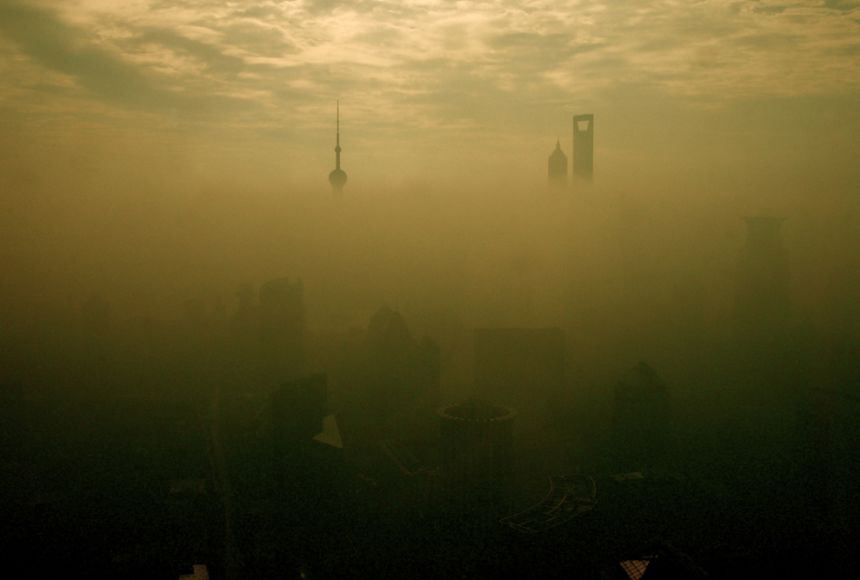

Information:
This website will aim to show the averages of carbon monoxide in the atmosphere of different countries.
Information Problem: what countries experience the most carbon monoxide in their atmosphere and what can be done to stop it?
The graphs that you will explore below show air quality data from the country you have chosen for the first ten recordings in 2019.
A conclusion one can make after looking at many different countries is that they all have very similar air quality in terms of carbon-monoxide.
While some countries have more variation, all the countries tend to have between 0.03 and 0.04 mols per meter squared.
According to NASA.gov: "Carbon monoxide plays a major role in atmospheric chemistry, and it affects the ability of the atmosphere to cleanse itself of many other polluting gases... it also takes part in the formation of lower-atmospheric (“bad”) ozone and urban smog."
NASA Source

Example of what fog looks like over a city.
API Graph of carbon monoxide in the atmosphere of chosen country: